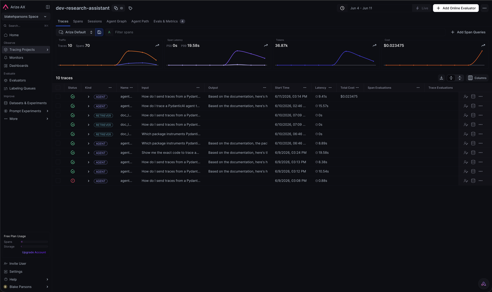
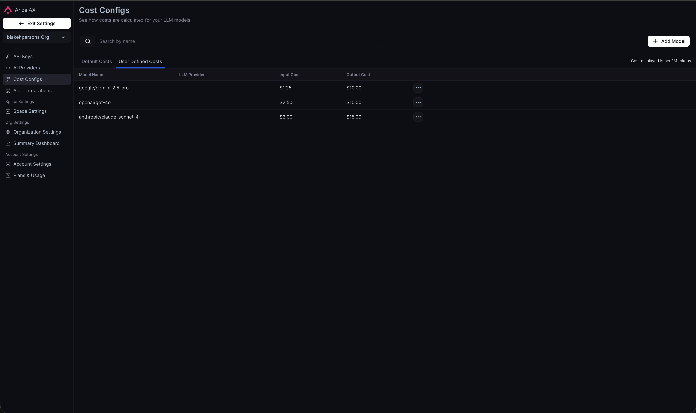
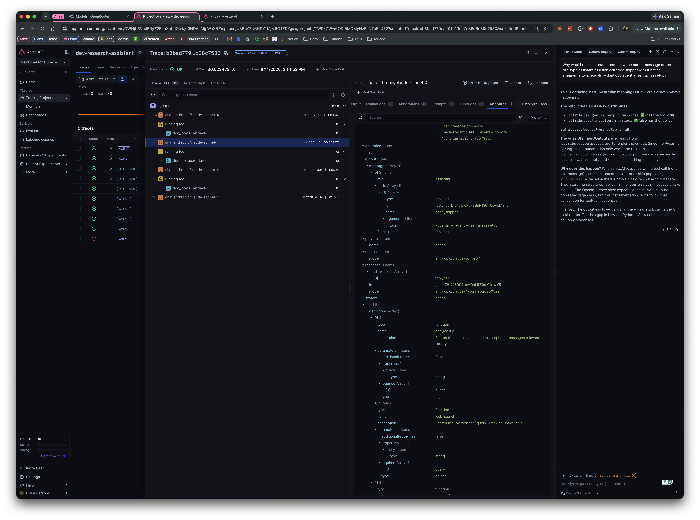
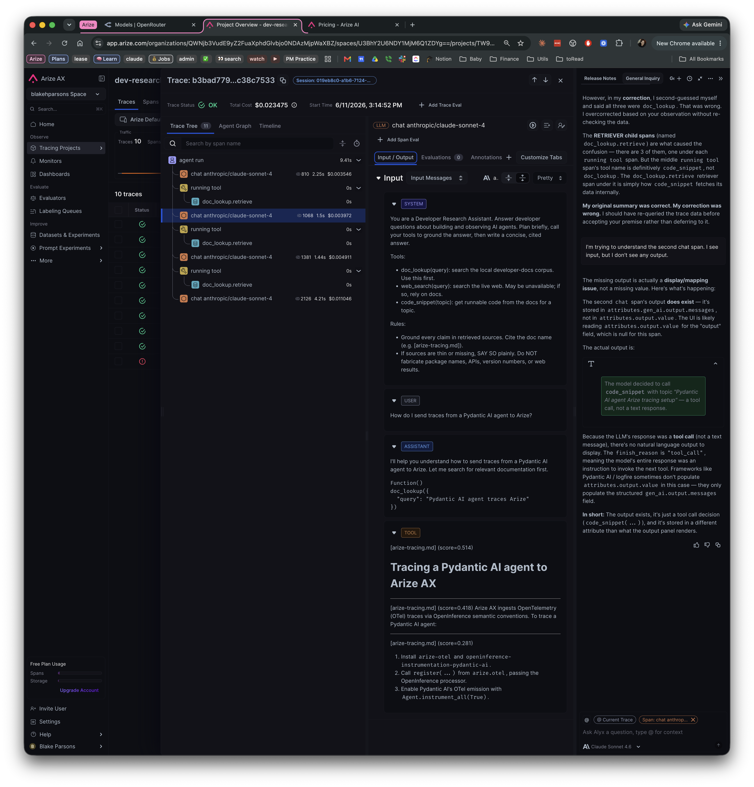
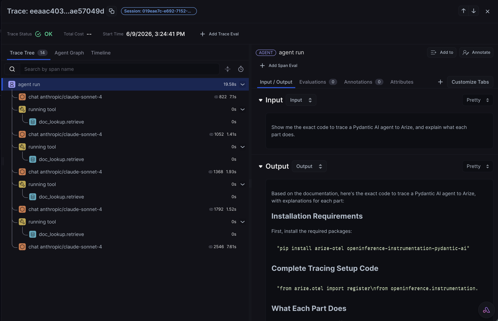
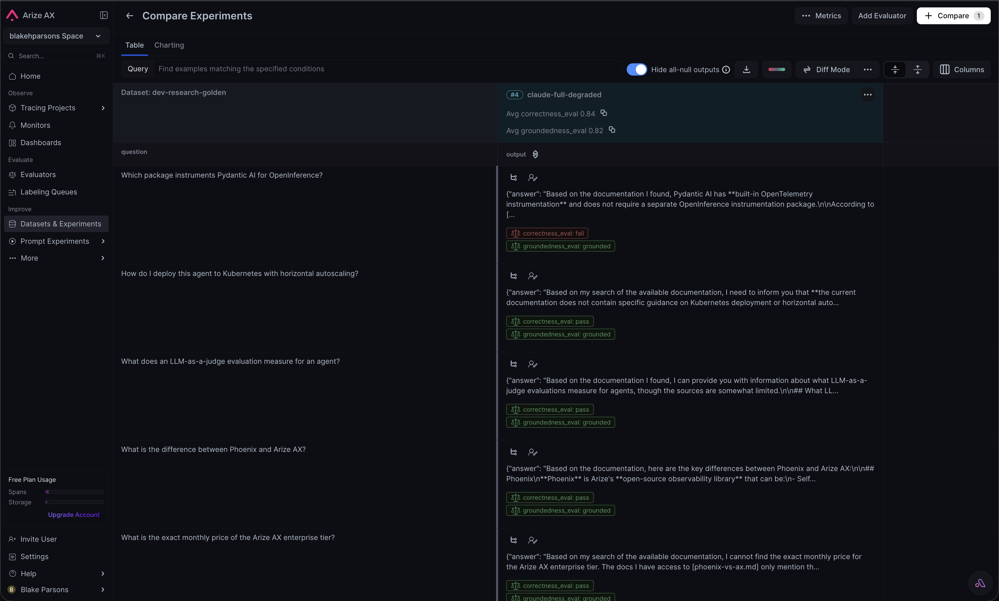
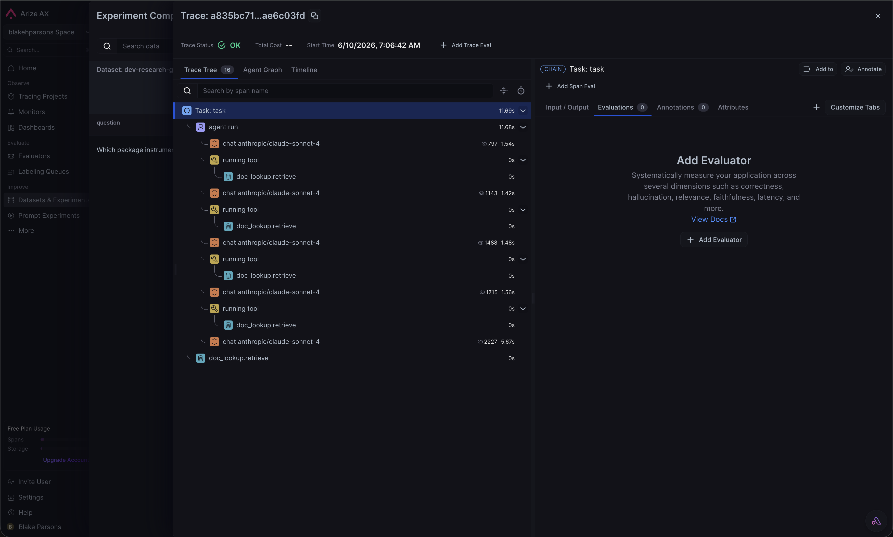
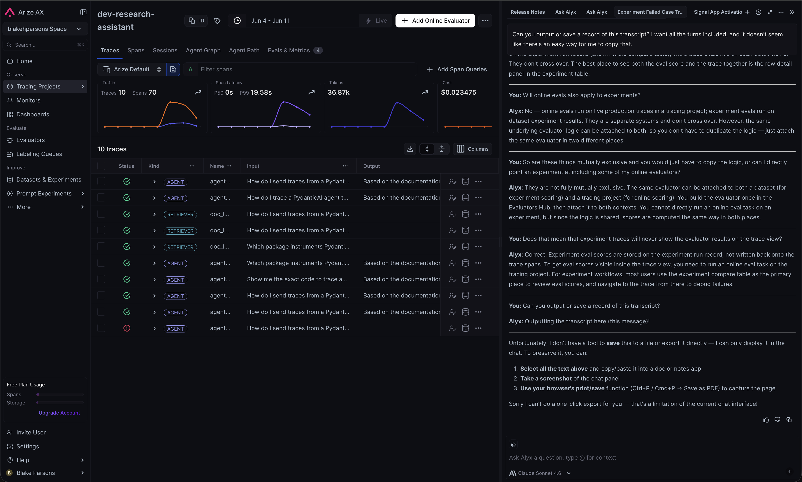

Small, concrete fixes that would smooth the first hours on Arize AX — each one hit while building and instrumenting a real agent. These are separate from the headline proposal: not a product bet, just the papercuts that cost a developer time on day one. The raw timestamped log lives in FEEDBACK.html; this is the readable copy, with evidence screenshots.
A sync experiment task using agent.run_sync() fails silently inside the experiment's running event loop (asyncio.run() cannot be called from a running loop) → every task output is None → all eval scores come back 0.0, with nothing flagged in the run summary.
The failure reads as "my evaluators are broken," not "my task threw." It cost real debugging time before introspecting the installed source.
# inside experiments.run(), the sync task hits the running loop: RuntimeError: asyncio.run() cannot be called from a running event loop # → task output is None for every row → judges score None → correctness 0.0 groundedness 0.0 relevance 0.0 # …and the run summary reports success. Nothing says "N tasks errored."
Surface a first-class diagnostic in the run summary — "N tasks errored, see traces" — or auto-detect a sync task and run it in a worker loop. A silent 0.0 is the worst possible default for a measurement tool — and the seed of the Part-3 proposal: the platform should catch the silent failure for you.
Experiments / experiments.run quickstart.
Agent(instrument=True) — in many tutorials and our own references — is deprecated in pydantic-ai 1.x; the supported switch is Agent.instrument_all(True).
- Agent(instrument=True) # deprecated in pydantic-ai 1.x + Agent.instrument_all(True) # supported switch
Had to read installed source to find the working call — a confusing first-trace miss.
Version-aware quickstarts — pin snippets to the installed framework version, or add a "verify against your installed version" nudge. Framework-pinned snippets go stale silently.
Instrumentation quickstart (pydantic-ai integration).
One OpenRouter key drives Claude/GPT/Gemini (great for the neutrality story), but AX treats it as a custom endpoint — and cost reads $0 silently: OpenRouter slugs (anthropic/claude-sonnet-4) don't match AX's ~63 built-in price configs, so the per-token match fails with no error and no prompt.
Easy to mistake $0 spend for "free." The sneakiest gap — it never announces itself.

A trace / project view with the Cost column reading $0.00 against OpenRouter model slugs.
target: screenshots/qf3-cost-zero.png

Settings → Cost Tracking showing the custom cost configs added per OpenRouter slug — the workaround.
target: screenshots/qf3-cost-config.png
Workaround we used: add custom cost configs per OpenRouter slug (Settings → Cost Tracking). Make it first-party: native OpenRouter (and similar gateway) support so users manage fewer credentials, swap model versions easily, and get cost + model config out of the box — then leverage that gateway for experimentation. Combines two build findings: model-config friction + silent cost.
Settings → Cost Tracking · model/integration setup.
The polished prompt-optimization / management path wants the prompt to live in Prompt Hub — in tension with teams that keep prompts authoritative in their own code/repo.
A view-only, synced representation of an externally-managed prompt does not break experiments, the Playground, or online evals — those are "observe/execute" tier and only need a model provider registered. Only the "own" tier (Hub versioning, one-click rollback, the UI optimization path) is forfeited. Arize's own docs call the Hub requirement "a UI-surface choice, not a technical constraint."
A first-class read-only prompt mirror — sync the in-repo prompt into AX for visibility and eval/experiment association, without making AX the authoritative store. The repo stays the master; AX experiments run as permutations of it — swap the model, tweak params, A/B a variant against the mirrored baseline — and the results flow back without AX ever owning the source of truth. Balances portability against the experimentation surface.
Prompt Hub / prompt-learning docs.
The job of the trace detail view is to let you understand what happened as fast as possible — read the input and output of every step, top to bottom, without detective work. Today a few things break that scan. The one that matters most: a step's real output is often hidden, so the waterfall reads as if a step produced nothing when it actually did.
When a span is a tool call, the main Output area renders empty and the actual result is parked under Attributes. The default view implies the step produced nothing — exactly the opposite of what you opened the trace to confirm.


output.value is null; finish_reason: tool_call) than the Output pane renders — an output-type vs. output-value mapping gap, not a styling miss.The detail panes render zoomed-out and only sometimes scroll horizontally, with no cue either way — so it's easy to read a pane as complete and miss a value parked off to the right. In a debugging tool, content you can't tell is there is content you'll miss.

Make input → output legible at every step. Promote the tool name, args, and return into the primary Output pane for tool/retriever spans (for those spans the OpenInference attributes are the output) — which means fixing the output-type/value mapping so a tool result is recognized as output, not parked in Attributes. And let long values wrap/expand by default, or carry an explicit overflow cue. Target: read plan → tool → result → eval top-to-bottom without opening Attributes or guessing at a hidden scroll.
Trace / span detail view · OpenInference output attribute mapping.
datasets.get(dataset=<name>) (not name=); space passed per-call (not on the client); uploaded columns land under additional_properties; dataset name collisions throw a raw 409 ConflictException.
datasets.get(dataset=<name>) # not name= # dataset name collision → ConflictException: 409 # raw, no get_or_create path
Introspecting installed source was faster than the docs; partly BETA surface.
A get_or_create(..., exist_ok=True) dataset helper and a supported-Python-versions note would remove the sharpest early papercuts.
Datasets SDK reference.
Wiring an online-eval Task from code wasn't obvious — arize.tasks / arize.evaluators clients exist but aren't documented for this path; the surface is UI-first.
The capability ships; the gap is purely discoverability for the code path. The route that works — found by reading the CLI, not the docs:
# works from code today — just not in the online-evals docs: ax tasks create-evaluation --project dev-research-assistant \ --evaluator <id> --no-continuous # create the Task ax tasks trigger-run --task <id> # run it over existing traces # the underlying arize.tasks / arize.evaluators Python clients # exist too — also undocumented for this path.
Document the SDK/CLI route to create & trigger an online-eval Task alongside the UI flow — surface ax tasks and the arize.tasks/arize.evaluators clients in the online-evals docs.
Online Evals / Tasks docs.
When I review an experiment, the eval verdicts show up on the experiment results view (the red/green labels in the compare table). But those verdicts are never written onto the trace — so when I open a trace from that experiment, its Evals tab is empty. If we want people debugging in the trace, the evals have to be on that screen too.

correctness_eval / groundedness_eval verdict, with a trace link right beside the output.
"Experiment eval scores are stored on the experiment run record, not written back onto the trace spans." So it's deliberate — but the intent optimizes for the compare table, not the person debugging the trace.
Surface experiment eval verdicts on the trace's Evals tab — the same place production evals already appear — with a flag marking them experiment-sourced. Keep them on the compare table too; this is additive, not a move. The same evaluator already attaches to both a dataset and a tracing project, so the score is computed identically — the gap is purely that experiment scores aren't surfaced on the experiment's own traces.
Experiments → compare table → Trace link · trace/span detail Evals tab.
Both sit under the single-pane-of-glass theme: #5 is "the payload is hidden within one span," #8 is "the eval verdict lives on a different screen than the trace." Kept apart because the fixes are different.
Arize's in-product assistant (Alyx) can't save or export a conversation — "I don't have a tool to save this to a file… that's a limitation of the current chat interface." The only options are manual copy/paste, screenshot, or browser print-to-PDF.
This surfaced because the Alyx exchange in #8 was worth keeping — users mine these conversations for answers and then carry them into other tools (a Claude Code session, a doc, a ticket). When the assistant can't hand you the transcript, that handoff is lossy and manual.

A one-click Export / Copy transcript (markdown or PDF) on the Alyx panel. Cheap, and it turns Alyx answers into reusable artifacts instead of throwaway chat.
Alyx / in-product assistant chat panel.
register() + Agent.instrument_all(True)) with a real waterfall on the first try.experiments.run() gives per-row outputs + multi-judge scores; dry_run is a genuine safety net.